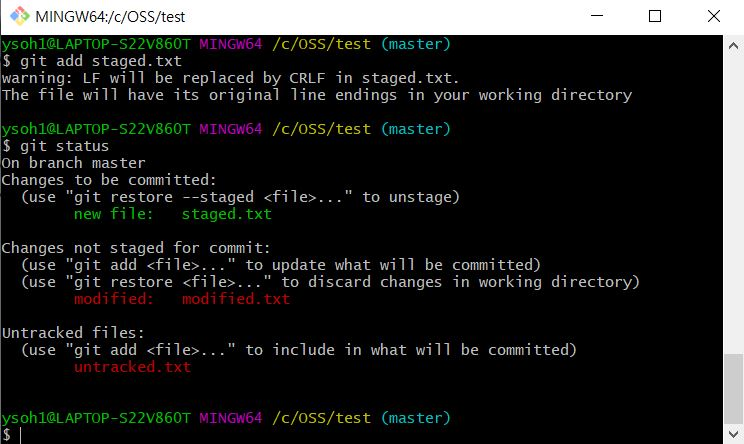
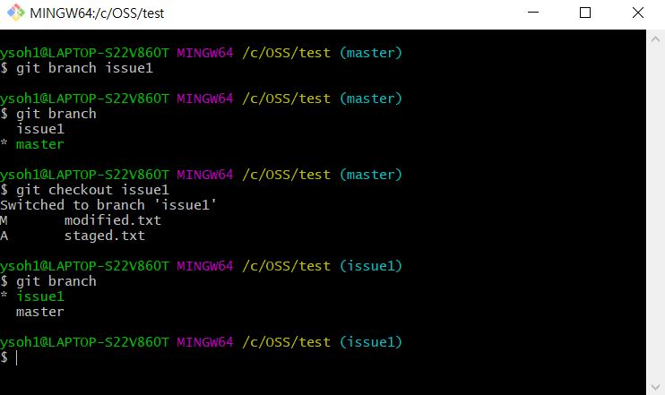

What is Git?
Git is some sort of Version Control System(VCS). It tracks changes in any set of files, usually for programmers.
Git is available for Windows, Linux, and MacOS.
Properties of files under control of git.
-
Untracked : The git doesn't care of this file.
ex) a file you just created.
-
Staged : The file is under control of git, and it is ready to be committed.ex) use git add (file_name) to be staged.
-
Committed (or Unmodified) : The file is recorded at git as a history.use git commit -m "(commit message)" to commit your staged file.
-
Modified : The status after modifiying a staged file.

What is branch?
 Branch : A independent working space of git system.
Branch : A independent working space of git system.
The basic branch when initialize git, is master branch.
The command to make a new branch is git branch (new_branch)
If you want to switch a branch, git checkout (branch_name)
How to use git more efficiently?
Github is a remote version control system.
The representative feature is that many developers can affect a repository online.
Any information of github? >> To github